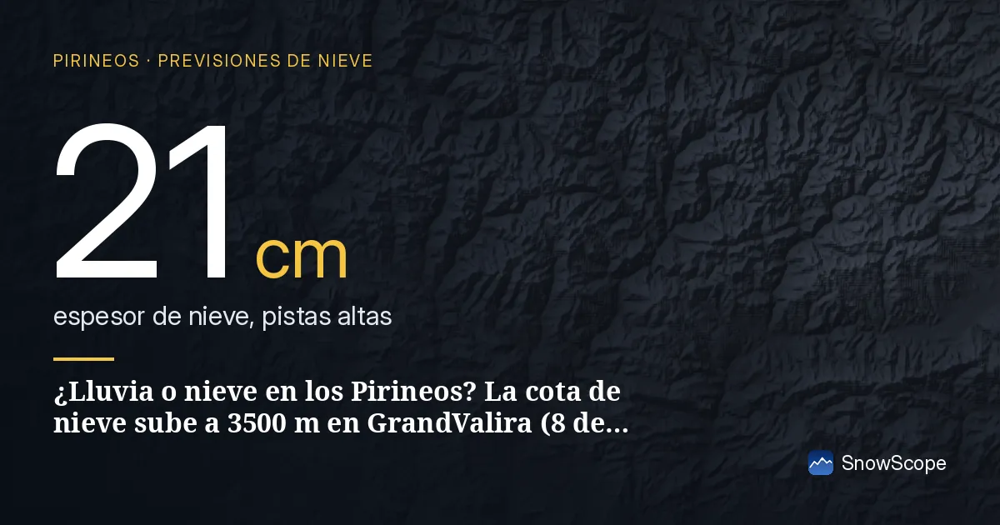
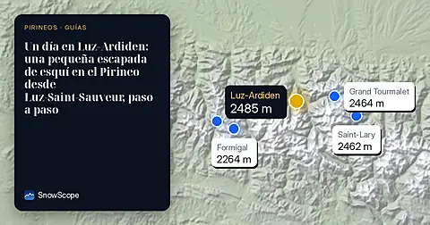

¿Lluvia en la nieve de los Pirineos? Nivel de congelación 3400m
La lluvia caerá sobre el manto de nieve en los Pirineos del 09 al 11 de noviembre. El nivel de congelación (donde la temperatura del aire alcanza 0 °C) llega a 3400m a 3600m durante las horas más cálidas—muy por encima de todas las estaciones—, lo que significa que cae lluvia, no nieve, en las montañas.
Consulta la previsión de nieve en tiempo real de Boí Taüll en la app SnowScopeEspesor de nieve, alertas de nieve polvo y mapa 3D, gratis.
¿Qué significa el nivel de congelación 3400m para cada estación?
El nivel de congelación sube y baja a lo largo de cada día: más frío al amanecer, más cálido a media tarde. La línea de nieve—donde la lluvia que cae se convierte en nieve—está unos 300 metros más abajo. En Boí Taüll (cota máxima 2747 m), el nivel de congelación del 09 de noviembre oscila entre 3010m y 3430m, por lo que la línea de nieve llega a 3100m al mediodía. Todo lo que está por debajo recibe lluvia.
GrandValira (cota máxima 2619 m) experimenta niveles de congelación aún más elevados: 3110m a 3840m. Todas las grandes estaciones de los Pirineos estarán por debajo de la línea de nieve estos próximos días. Todas las montañas que cubrimos tendrán lluvia sobre nieve durante los tres días.
| Estación | Espesor de nieve | Nieve nueva, 72 h | Previsto, próximos días | Cota máx. |
|---|---|---|---|---|
| Boí Taüll | 5 cm | 0 cm | 3 cm | 2747 m |
| GrandValira | 15 cm | 0 cm | 0 cm | 2619 m |
| Masella | 17 cm | 0 cm | 0 cm | 2509 m |
| Espace Cambre d'Aze | 21 cm | 0 cm | 0 cm | 2377 m |
| Astun | 5 cm | 0 cm | 0 cm | 2272 m |

El nivel de congelación baja, pero se mantiene alto
El 09 de noviembre es el peor día: el nivel de congelación alcanza 3840m en toda la región (una variación de 2940m a 3840m). Para el 10 de noviembre, el mínimo desciende a 2710m, pero el máximo se mantiene en 3500m. El 11 de noviembre, el suelo baja más a 2610m, y el techo a 3520m.
Esta tendencia es buena noticia si esperas hasta más tarde en la semana, pero eso no importa: el riesgo de lluvia sobre nieve no desaparece. Cada día hasta el 11 de noviembre habrá precipitación que cae sobre nieve en algún lugar de la montaña.
Por qué importa: nieve escasa de principios de temporada
El manto de nieve de los Pirineos es frágil. Boí Taüll tiene 5 cm en las cotas altas. GrandValira tiene 15 cm. La mayoría de las estaciones reportan profundidades de 5–20 cm. La cobertura de nieve se ha reducido de 2670 km2 (06 de noviembre) a 1550 km2 (08 de noviembre).
Cuando llueve sobre nieve poco profunda, añade peso y agua, ablandando la capa inferior y a veces provocando riesgo de aludes. Preveemos que el área cubierta de nieve bajará a 390 km2 para el 11 de noviembre. Si planeas esquiar fuera de pista, consulta el boletín oficial de aludes.
De dónde viene la lluvia
La mayoría de la precipitación llega del 12 al 13 de noviembre, pero los adelantados llegan del 09 al 10 de noviembre. En Baqueira-Beret y Saint-Lary—ambas a unos 2510–2515 m—los totales de lluvia de los próximos cinco días (09–13 de noviembre) serán 43 mm y 55 mm respectivamente.
Baqueira-Beret verá solo 1 mm a 3 mm por día hasta el 12 de noviembre; Saint-Lary recibe 6 mm a 12 mm del 09 al 10 de noviembre. El volumen parece pequeño, pero cae como lluvia—no como nieve—en altitud, por lo que concentra el daño del agua en una base fina.
Cuándo esperar el cambio
Después del 11 de noviembre, las condiciones cambian. El nivel de congelación desciende bruscamente, y el volumen de precipitación aumenta. Eso significa que menos lluvia llegará a las cotas altas, y el manto de nieve se estabilizará.
La nieve de principios de temporada nunca es ideal para esquiar—se agarra a las rocas, se compacta rápidamente, se vuelve helada. La lluvia sobre nieve lo complica añadiendo una capa húmeda. A partir del 12 de noviembre, esa capa húmeda se congelará formando una costra. La peor ventana de lluvia sobre nieve se cierra.
Consejos para esquiadores
- Evita el terreno empinado fuera de pista del 09 al 11 de noviembre. La lluvia sobre un manto de nieve fino aumenta el riesgo de aludes. Consulta el boletín oficial de aludes antes de ir.
- Mantente en las pistas preparadas y patrulladas si esquías durante estos tres días. La patrulla de esquí tiene la información más actualizada sobre la estabilidad de la nieve.
- Ajusta tu horario al nivel de congelación. Esquiar a primera hora de la mañana es más seguro que al mediodía porque el nivel de congelación es más bajo (aire más frío).
- Después del 11 de noviembre, las condiciones serán más estables pero heladas. La ventana de lluvia sobre nieve se cierra, y el manto se recongelará.
- Usa SnowScope para rastrear cuándo la nieve desaparece de tu estación elegida. Se prevé que el área cubierta de nieve en la región caiga bruscamente; tu terreno local seguirá ese patrón.
Sobre estas cifras
Los espesores de nieve de las estaciones son la nieve más profunda en las pistas altas según el modelo de nieve de SnowScope (unos 1 km, cálculo del 8 de noviembre); son estimaciones para una zona, no una medida en un punto. Los valores de las estaciones de medida son medidas en la fecha indicada. Las previsiones pueden cambiar. Consulta siempre el boletín oficial de aludes antes de salir fuera de pista.
Boletines oficiales de aludes: Météo-France / Meteocat / AEMET
Citar este informe
Para investigación, docencia o prensa: cifras y gráficos reutilizables libremente bajo CC BY 4.0 con esta cita.
SnowScope (2026), ¿Lluvia en la nieve de los Pirineos? Nivel de congelación 3400m, https://snowscope.app/blog/es/2026/11/pyrenees-freezing-level-snow-line-8-november-2026.html, consultado el 2026-11-08
SnowScope (Atlas Labs). (2026, November 8). ¿Lluvia en la nieve de los Pirineos? Nivel de congelación 3400m. SnowScope snow reports. https://snowscope.app/blog/es/2026/11/pyrenees-freezing-level-snow-line-8-november-2026.html
BibTeX
@misc{snowscope2026pyreneesfreezinglevelsno,
author = {{SnowScope (Atlas Labs)}},
title = {¿Lluvia en la nieve de los Pirineos? Nivel de congelación 3400m},
year = {2026},
month = nov,
howpublished = {\url{https://snowscope.app/blog/es/2026/11/pyrenees-freezing-level-snow-line-8-november-2026.html}},
note = {Published 2026-11-08 20:51 UTC; accessed 2026-11-08}
}· CC BY 4.0 · Métodos, datos y herramientas →
Boí Taüll: nieve y temperatura según la altura, este invierno vs el pasado (herramientas) →
Sigue Boí Taüll
Gratis: un aviso cuando llega la nieve y la previsión cada mañana.
Más partes de nieve

Forfaits de día en los Pirineos desde 46 EUR: seis estaciones de Francia, España y Andorra comparadas por precio, y después por la nieve que suelen tener en diciembre y enero.

Menos días de nieve en los 120 puntos estudiados en los Pirineos desde 1980-81, sobre todo por debajo de 1500 m: nuestra serie de 46 inviernos.

Cómo aprovechar un día en Luz-Ardiden, una pequeña estación sobre Luz-Saint-Sauveur en los Altos Pirineos: la carretera, los dos sectores, la nieve de 46 inviernos pasados y qué semanas elegir.